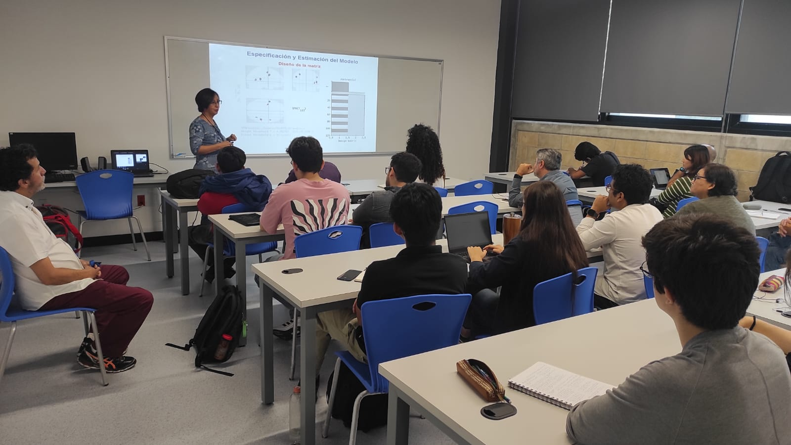

Artificial Inteligence in Biomedicine Group (ArBio) Teaching
We teach undergraduate and graduate courses in the areas of computer vision,
biomedical image analysis and processing, stereoscopic vision, among others.
We are interested in teaching courses and workshops both in postgraduate courses
and to the general public.

Postgraduate courses
Computer vision
This course allows to know and apply the main Computer Vision concepts through projects development.
At the end of the course, the student must be able to define Computer Vision and the type of data used;
to extract and tag relevant information, matching images and delimit regions with similar characteristics;
to manipulate images in a 3-D scene obtained from different views; to estimate movement and object
tracking from images sequences; as well as, to classify objects or images to solve some current problem. Imparted at Posgrado en Ciencia e Ingeniería de la Computación, IIMAS,UNAM.Syllabus
1. Introduction
2. Feature extraction
3. Image registration
4. Segmentation
5. Multiple views
6. Movement and tracking
7. Introduction to classification and regression
Multi-view Geometry in Stereoscopic Vision
This course aims to understand and implement geometric concepts in computer vision for interaction analysis
between geometry and stereoscopic images, as well as the transformation into computational code.
Three approaches are considering within the course: the mathematical principles of projective
geometry (projective plane, projective transformations and projective space); the parametric
estimation in multi-view geometry (camera geometry, 1-view geometry, 2-views, 3-views)
and the approach from computational algorithms for non-parametric estimation in
multi-view geometry (2.5-D processing, parameter estimation using computational
learning algorithms, and scene reconstructions). Imparted at Posgrado en Ciencia e Ingeniería de la Computación, IIMAS,UNAM.Syllabus
This course aims to understand and implement the concepts of deep learning in computer vision,
by reviewing architectures of convolutional neural networks, residual neural networks,
either for classification or segmentation tasks, as well as attentional neural networks,
architectures recurrent and motion estimation, architectures for depth estimation,
and finally also neural networks for data augmentation. Imparted at Posgrado en Ciencia e Ingeniería de la Computación, IIMAS,UNAM.Syllabus
1. Fundamentals of Artificial Intelligence
2. Deep Learning introduction
3. Convolutional neural networks
4. Residual neural networks
5. Attentional neural networks
6. Recurrent architectures and motion estimation
7. Architectures for depth estimation
8. Data augmentation networks